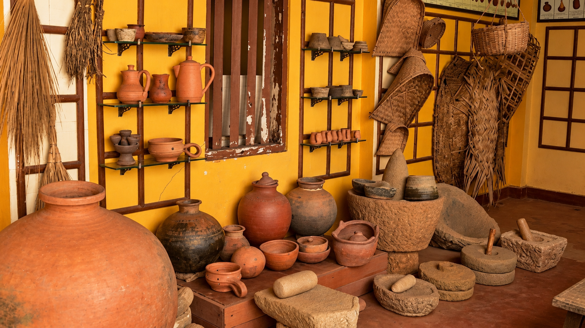

>
Bamboo Craft
Handwoven bamboo traditions shaped through skill, patience and local knowledge.
View DetailsExplore the people, techniques, objects and stories that form the ROOTS archive. Each entry opens a window into a tradition that continues to live through communities and everyday practice.
Handwoven bamboo traditions shaped through skill, patience and local knowledge.
View Details
Threads, patterns and patient hands carrying textile knowledge forward.
View Details
A closer look at the makers whose hands keep traditional skills alive.
View Details
Material, fire and skilled hands transformed into enduring objects.
View Details
Clay shaped by hand into objects connected to everyday cultural life.
View Details

A glimpse into the cultural traditions, everyday life and heritage of the Bodo community of Assam.
View Details
Community memory, visual traditions and cultural practices passed through generations.
View Details
A visual entry exploring community, landscape and the relationship between people and place.
View Details
Community traditions, cultural expression and everyday knowledge carried through generations.
View Details
A heritage entry connecting community, forest knowledge and traditional material practices.
View Details
Personal memories and everyday stories that reveal how heritage lives within the home.
View Details
A story about the deep relationship between people, forests and the knowledge of the natural world.
View Details
Everyday objects can hold memory, identity and stories that travel across generations.
View DetailsTry another search term or choose a different archive category.
“A tradition survives when it continues to be lived, shared and remembered.”
✦
Explore the story behind the relationship between people and the natural world.
Read the Story →Heritage is also carried through memory, conversation and the voices of people who live these traditions every day.
Memories, family stories and small everyday moments that become part of cultural memory.
Explore Story →
A story of forests, natural knowledge and the relationship between people and the land around them.
Explore Story →ROOTS is a digital heritage archive created to document the people, crafts, stories and traditions that continue to shape India's cultural landscape.
Heritage is not only something preserved in museums. It lives in the hands of artisans, in community stories, in everyday objects and in knowledge passed from one generation to another.
Back to Explore →Communities, crafts and stories documented through the archive.
Explore ROOTS through crafts, voices and communities.
One growing digital space for heritage and cultural memory.
Every object, skill, story and community carries a piece of knowledge. ROOTS creates a space where those pieces can be discovered, understood and remembered.
Know a craft, community, object or story that deserves a place in the archive? Connect with ROOTS and help document living heritage.